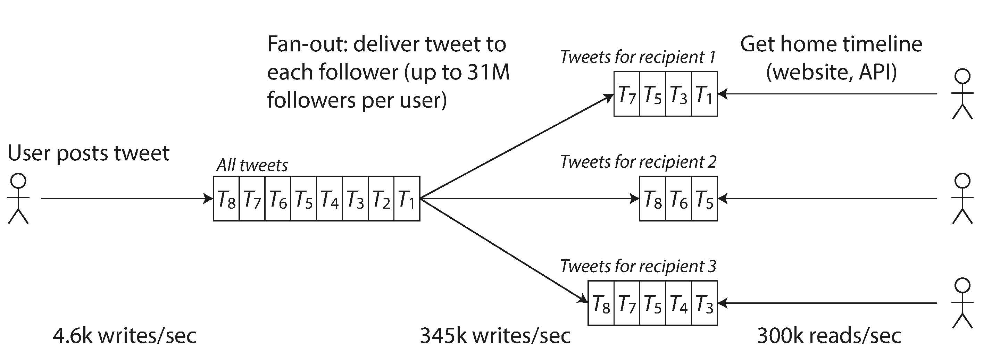

شکل 1-2. Schema رابطهای ساده برای پیادهسازی یک جدول زمانی home Twitter.
شکل 1-3. Data pipeline Twitter برای تحویل توییتها به دنبالکنندگان، با load parameters از نوامبر 2012 [16].
اولین نسخه Twitter از رویکرد 1 استفاده میکرد، اما سیستمها برای همگام شدن با بار home timeline queries تلاش میکردند، بنابراین این شرکت به رویکرد 2 روی آورد. این کار بهتر است زیرا میانگین نرخ توییتهای منتشر شده تقریباً دو مرتبه کمتر از نرخ خواندن جدول زمانی home است، بنابراین در این مورد ترجیح داده میشود که کار بیشتری در زمان نوشتن و کمتر در زمان خواندن انجام شود.
با این حال، نقطه ضعف رویکرد 2 این است که ارسال یک توییت اکنون به کار اضافی زیادی نیاز دارد. بهطور متوسط، یک توییت به حدود 75 دنبالکننده تحویل داده میشود، بنابراین 4.6 هزار توییت در ثانیه به 345 هزار نوشتن در ثانیه به caches جدول زمانی home تبدیل میشود. اما این میانگین این واقعیت را پنهان میکند که تعداد دنبالکنندگان هر کاربر بهشدت متفاوت است و برخی از کاربران 12 | Chapter 1: Reliable, Scalable, and Maintainable Applications